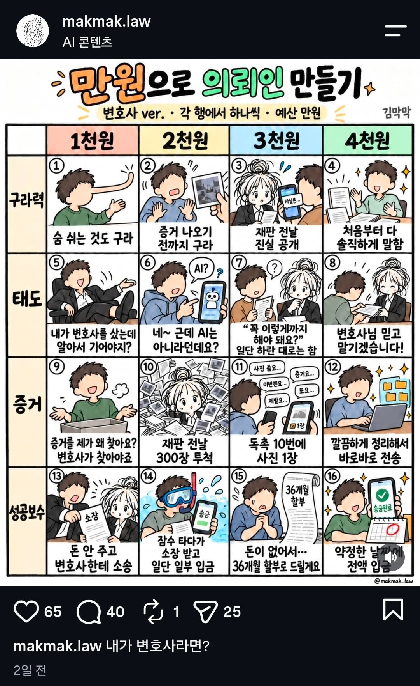

만원으로 변호사 의뢰인 만들기
댓글
4 1 1 4
4 5 11 14?
1 6 11 16
변호사 입장이잖아
1414지 무조건
돈 잘들어오고 순종적인 태도면 ok야
구라치면 본인만 괴롭지 뭐
구라치고 증거도 없는데 승소를 하면 변호사가 아니라 마법사지
승소를 해라는 말이 없으니깐
착수금만 받을거면 상관 없긴 해
4114 정배지
아이시발
사울에게 전화하세요
태도는 어차피 구라력, 증거 4천원짜리면 별로 만날일도 없으니
10, 11은 바꿔야됨
전날에 대충 뭔 사진인지 보고, 기일에 가서 재판장한테 입증자료를 찾는데 오래 걸렸는데 ~~한 자료와 준비서면 제출하겠습니다 하고 ai한테 ~~한 주장 보강할만한 자료 선별해두라고 하면 쉬움
반면에 독촉하는데 안주면 재판 가서도 할 말 없음
난 11번을 좀 겪으면서 “와, 본인 일인데 이런 태도일 수가 있나”라고 감탄을 함
그니까 11번이 2천원으로 가야지 ㅋㅋ
6000원 추가 입금 어디로 하면 될까요?
하나만 하는 의뢰인은 없다.
1111이거나 4444이거나 그 중간의 스팩트럼만이 있을 뿐!
구라는 안됨 이건 포기 안됨
안해!
변호사면 만원받고 하겠냐고~ 삼습만원 주라고 삼습만원
성공보수 뜯기는 사례가 많나?
123이 다 별로네 ㄷㄷ
몇년전에 고용변으로 일할때 대표가 성공보수 못받은거 다 받았으면 서울에 집 한채 산다고 했었음
안내고 배째라 시전하거나 다시 내놓으라고 소송거는 경우들 있는데 법원이 종종 일부 반환하라고 판결내서 웃김
그냥 돈 부분만 4 찍고 나머진 알아서...
어차피 1~3 하나는 1찍어야 하는데
전부 구라, 말 안 들음, 증거 안 줌
변호사도 극한직업이야?
미친놈이 1111하면 지만손해아님? ㅋㅋㅋ 누가보면 변호사가 감옥가는줄
3331
어차피 돈이야 소송으로 받아내면 그만이고 3번정도면 어느정도 협조받아서 승소 가능할듯
근데 뭐 고객이 저러는게 신물나면 직종을 바꾸는게 맞지않을까
근데 고객이라고 1~3처럼 행동하면 무조건 본인이 손해인 업계임
13은 개꿀일 것 같고 9도 어차피 자기가 좆되는건데 상관없으니 4 4 1 1?
1 4 4 1 이지.
의뢰인 변호야 지던 말던 상관없지.
보수 안 주려고 고소한다? 보수금 2배 이벤트인데 참음?
1111 하고 6천원은 햄부기먹어야지
2 7 10 16
천원만 더 줘라 쫌 부가세라고 치고
16번만 가능하면 나머진 아무거나 상관없는거 아니냐? ㅋㅋ
4 5 12 13 구라치고 자료안주는것만큼 빡치는건 없따
애초에 의뢰인 말을 그대로 믿으면 안됨.
당연히 4141 아닌가?
거짓말 해서 일 못하게 하는 것만큼 ㅈ같은 거 없음
그리고 태도야 그냥 내가 무시하면 그만이고 나한테 욕같은 거 박지 않는 이상 무시하면됨
증거도 거짓말하는 거랑 비슷한데 빠른 해결을 위해 무조건 적으로 있어야 함 그리고 당연히 증거 늦게주면 내 손해가 아니라 의뢰인 손해
마지막은 뭐 변호사 상대로 소송 걸면? 어쩔 건데? 변호사 비용 포함 더 얹어서 뚜드려 맞지
그냥 죽이면 안됨? 죽이고 정당방위
인정하는개
빠를듯
예산과는 별개로 억울한 사람과 죄가 있는 사람 성향이 4와 1, 극과 극으로 갈릴 거 같네
4141 1414 둘다 만족하는게 웃음벨이네 ㅋㅋㅋ
손님입장에서는
4141
변호사입장에서는
1414
4141 첫번째가 4가 되면
다음 1행동이 나올수가 없음ㅋㅋㅋ
나머지는 진행 수월하게 됐고
체력 여유도 남는데 돈안주면 뭐 어쩔거야
받아내고 소송 이기는게 변호사 일인데 ㅋㅋㅋㅋㅋ
ㅅㅂ 거를 타선이 없네 ㄷㄷㄷ
4141